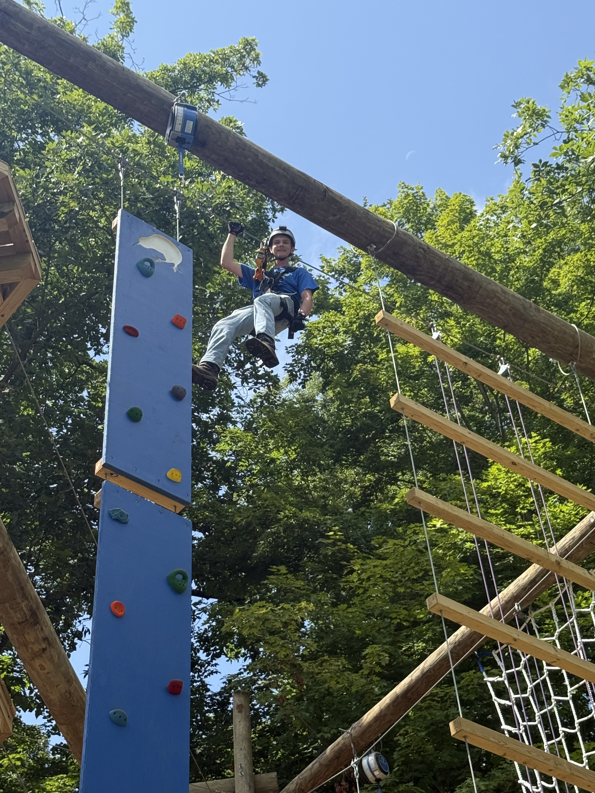

Paul
Creegan
Rope access technician.
Climbing has been part of my life since 2024, and it led me to rope access work. I now work as a rope access technician in New York City, bringing that experience to demanding work at height.
Where it began: the ropes course.
During the summers of 2024 through 2026, I worked as an Outdoor Adventure Specialist at Kiwi Country Day Camp in Carmel, NY. I helped run the high ropes course, zip line, rock wall, and Geronimo free-fall experience. That hands-on work, together with my climbing experience, introduced me to the rope access industry and set me on this path.

Eagle Scout at fourteen.
I spent seven years as a Cub Scout and Boy Scout, and reached Eagle Scout — the highest rank — at 14. The rank requires 21 merit badges: 13 of them mandatory, 8 of my own choosing. I kept going and finished with 41, including four Eagle palms.
My favorites were Citizenship in the Community, because it's about being useful to the people around you, and Fishing, which I already did every summer.
Earning a badge meant completing the workbook and a worksheet, then demonstrating the skill to a counselor who is proficient in that field. My father is an Assistant Scout Master and counsels the Law badge, among others.

Assistant Scoutmaster.
Starting in Fall 2026 I have become an Assistant Scoutmaster for Troop 18 Briarcliff. I want to pass on my own enthusiasm for scouting onto the next generation — the skills, the experience, and the community that helped shape me into the person I am today.
Fishing Enthusiast
I have been a fishing enthusiast from a young age, and even turned my enthusiasm for fishing into my first job. I mostly fish for bass, trout, and panfish. I started working at 13 as a Fishing Specialist at Breezemont Day Camp. My first year there I revitalized the fishing program to help generate more interest with the kids. My second year there they built a second dock for the explosive interest in fishing. After Breezemont I worked at Kiwi Country Day Camp as the Fishing Specialist.